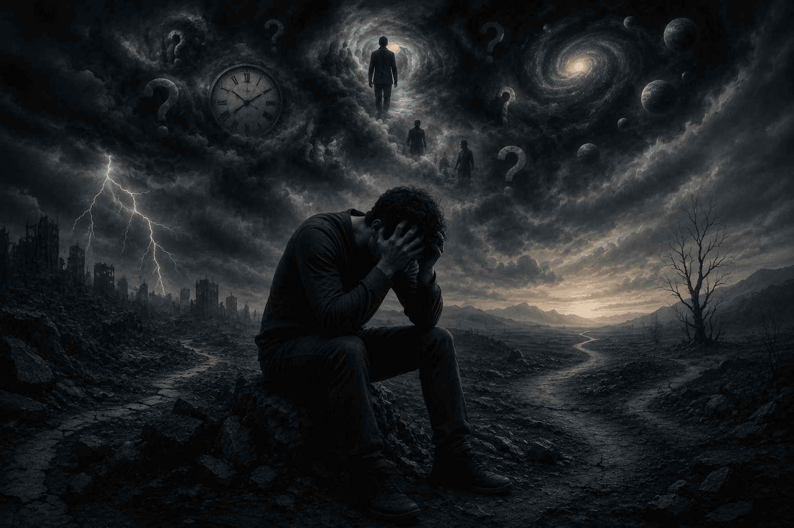
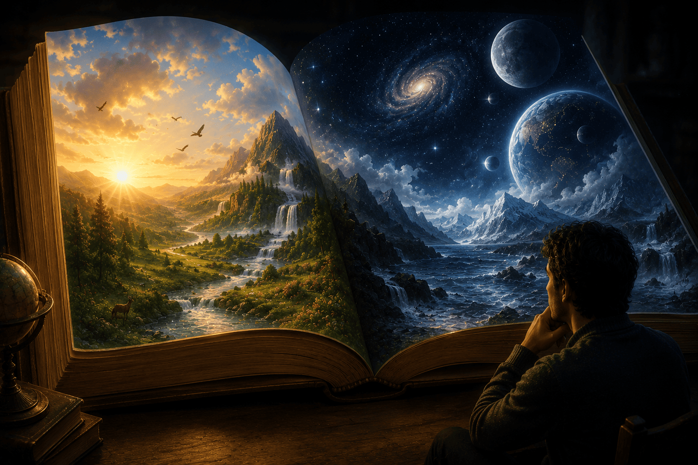
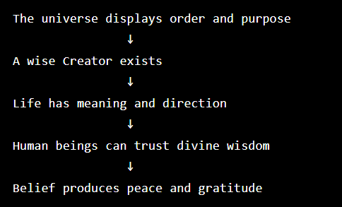
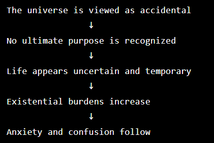

The Second Word of The Words by Imam Said Nursi explores a simple but profound question:
What practical difference does belief in God make to a person's life ?
Imam Nursi's answer is that belief (iman) and disbelief (kufr) are not merely different opinions. They lead to completely different ways of seeing the world and experiencing life.
Imam Nursi asks us to imagine two men entering a magnificent palace.
The First Man (The Believer)
He recognizes:
Because of this:
The Second Man (The Disbeliever)
He refuses to acknowledge any owner or ruler, instead he assumes:
As a result:
The Universe Is Like the Palace
The palace represents the universe, Imam Nursi argues that:
all point toward a wise Creator.
The believer sees creation as meaningful and purposeful.
The disbeliever sees the same world but interprets it as ultimately accidental and purposeless.
A major theme of the Second Word is:
Belief turns heavy burdens into manageable responsibilities.
The believer knows:
This creates trust and inner peace.
According to Imam Nursi, without belief a person faces difficult questions:
If existence is viewed as random, these questions become much harder to answer.

The result can be:
Another recurring idea is that creation resembles a book.
The believer:
The disbeliever:

Imam Nursi summarizes the difference as:
Belief

Disbelief
